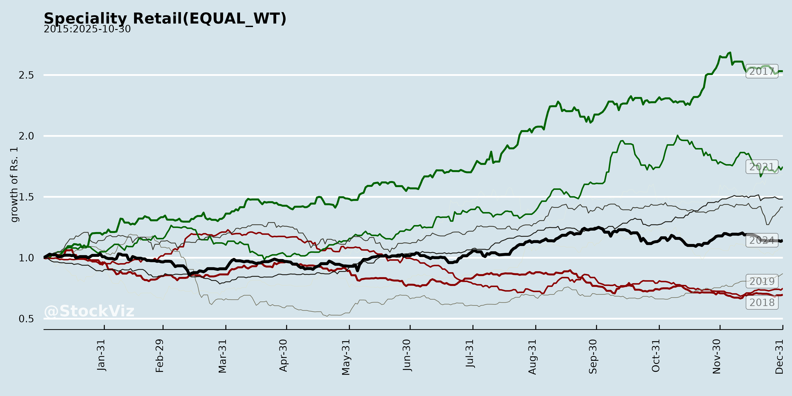
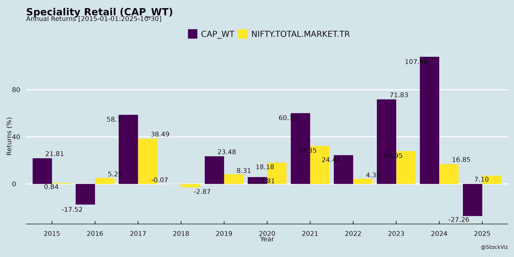
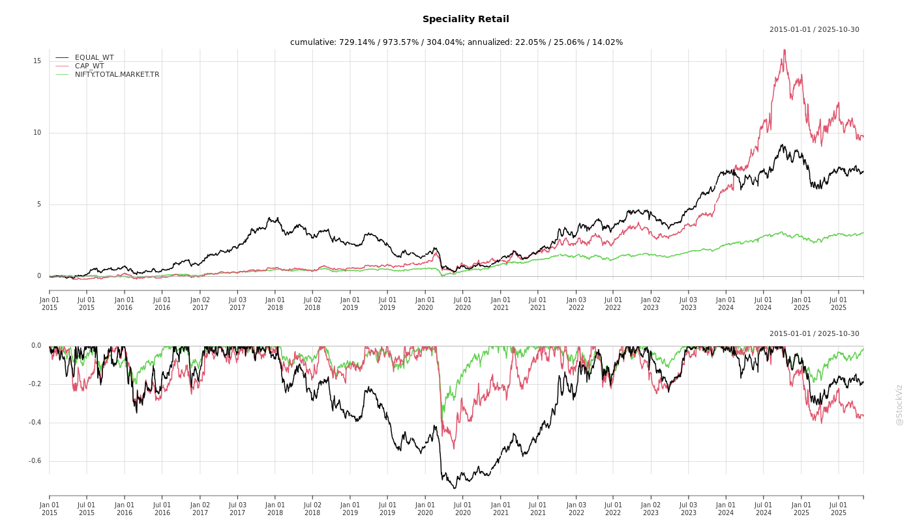
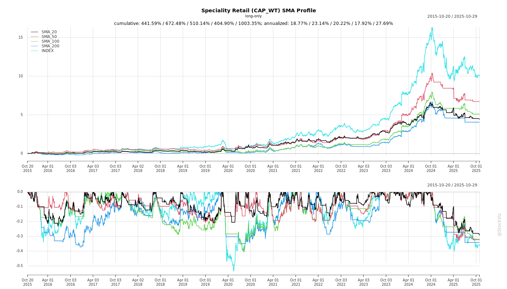
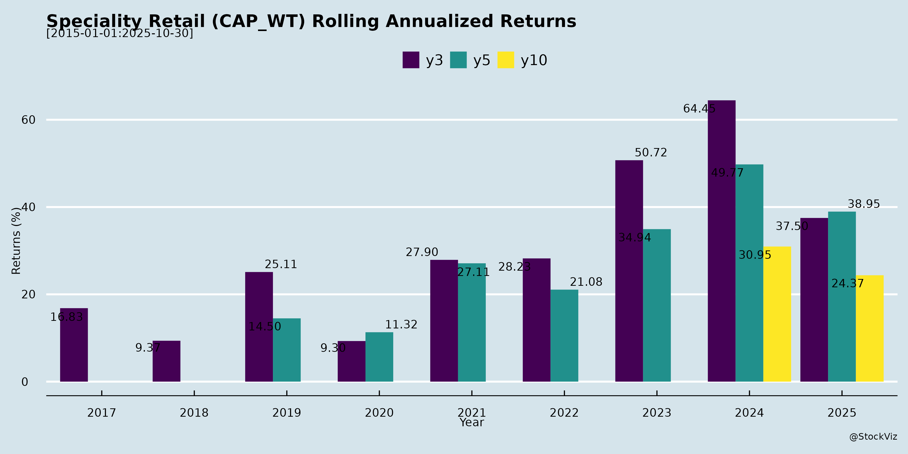

Speciality Retail
Industry Metrics
February 20, 2026
Annual Returns



Cumulative Returns and Drawdowns

SMA Scenarios

Current Distance from SMA
Rolling Returns

Market Cap
EBIT (% of Industry Total)
Revenue (% of Industry Total)
AI Summaries
Analyst
asof: 2025-12-03
Analysis of Indian Speciality Retail Sector (Based on Provided Documents)
The documents cover Q2/H1 FY26 earnings transcripts, analyst meeting schedules, and disclosures from key players like Trent, Lenskart, Aditya Birla Lifestyle Brands (ABLBL), ABFRL, V2 Retail, Baazar Style Retail, Go Fashion (Mufti), Credo Brands, and others. They reflect a mixed but resilient sector amid festive boosts, GST transitions, and demand softness. Below is a structured analysis of headwinds, tailwinds, growth prospects, and key risks.
Headwinds
- Muted Consumer Demand & SSSG Pressure: Flat/negative SSSG persists in premium/niche segments (e.g., Go Fashion: flat for 10 quarters; Mufti: muted footfalls). Regional disruptions (e.g., floods in East for ABLBL/ABFRL) and cautious sentiment (ABFRL: “measured consumer environment”) weigh on growth.
- GST Transition Disruptions: Wholesale reconfiguration and IT changes impacted Sep’25 sales (ABLBL: “half of September lost”; V2 Retail: similar). Price hikes (12%→18% above ₹2,500) risk elasticity; reductions (12%→5% for ₹1,000-₹2,500) passed to consumers, limiting margins (Go Fashion: no immediate benefit).
- Seasonal/Festive Volatility: Early Puja/Diwali shifted sales (V2: normalized SSSG 10.3% vs. reported 23.4%; ABFRL: preponement benefit offset by rains).
- Supply Chain & Inventory Issues: Bangladesh delays (Mufti: ₹20-25cr revenue shift); inventory buildup for weddings (ABLBL); rising days (Mufti: 217 days).
- Cost Pressures: Sharp depreciation/interest rises from expansions (ABLBL: dep. up to ₹209cr; ABFRL: higher leases); marketing hikes (ABFRL: +200bps ad spend).
Tailwinds
- Festive & Small-Town Momentum: Strong LTL/SSSG in value retail (V2: 23%; Baazar Style: 22%; ABLBL: 12%). Tier 2/3 outperforms metros (ABLBL: stronger small-town LTL).
- Robust Expansion & Network Growth: Aggressive additions (V2: 86 stores H1, target 130; Baazar: 36 H1, target 40-50; Trent/ABFRL: 75+ stores). Retail area up 38% YoY (Baazar).
- Private Labels & Mix Shift: Rising contribution (Baazar: 58%; ABFRL ethnic: 34% ex-TCNS). Premiumization aids ASP (Go Fashion: +2-3%; Mufti: higher AOV in flagships).
- Digital/Tech Investments: E-comm doubles (Mufti); SAP/Infor rollout (Baazar: ₹20-25cr capex). Omni-channel pilots (ABFRL TMRW: +27%).
- Policy Support: GST cuts/income tax reliefs boosting disposable income (multiple mentions); early winter aiding sales (V2: +5% sales delta).
Growth Prospects
- Value & Ethnic Segments: Explosive potential (V2: 50%+ CAGR target; ABFRL ethnic: 20%+ LTL; Baazar: 25-30% FY26 revenue). Tier 2/3/rural runway (ABLBL: small-town acceleration).
- Store Expansion & Footprint: National scaling (V2: 150 stores FY27; Trent: 3,250 stores). Premium flagships (Mufti: 5 H1) and pilots (Lenskart plant; Go Fashion topwear).
- Category Diversification: Emerging businesses (ABLBL: innerwear/Reebok +11% LTL); women’s/men’s pilots (Go Fashion: ₹1,000 PSF); luxury/ethnic (ABFRL: Tasva +58%).
- Efficiency Gains: Inventory optimization (Baazar: 86 days; V2: breakeven Month 1); tech-driven leverage (ABFRL: rent leverage). ROE targets (V2: 20%+).
- Long-Term: Organized shift (Technopak study pending); weddings/Diwali revival (ABFRL: optimistic).
Key Risks
- Demand Sensitivity: Prolonged slowdown/wedding softness (ABFRL/ABLBL: cautious festive); competition in value space (V2/Baazar).
- GST/Price Elasticity: Threshold shifts (₹2,625 steep delta) could hit premium sales (Go Fashion: suits/blazers at 18%).
- Execution Risks: Expansion cannibalization/store closures (Mufti: 23 closures; ABFRL: renovations flux); capex overruns (tech ₹20-25cr).
- Operational: Supply disruptions (Bangladesh); attrition/management churn (V2: senior exits); working capital stretch (Mufti: 217 days).
- Macro/External: Rains/floods (East disruptions); monsoon/winter unpredictability (V2).
Summary
Indian speciality retail shows resilience in value formats (V2/Baazar: 70%+ growth) amid premium/niche softness (Go/Mufti: flat/decline), driven by festive/small-town tailwinds but hampered by GST disruptions and demand caution. Growth prospects are strong (25-50% revenue CAGR via expansion/private labels/Tier 2/3), with tech/digital as enablers. Headwinds (seasonality/costs) are transitional, but risks like execution and macro sensitivity persist. Sector outlook: Optimistic for value/ethnic (H2 festive boost); cautious premium. Overall FY26 guidance: 25-30% revenue (revised up), stable margins (pre-IndAS EBITDA 7-8%). Long-term: Tier 2/3 + organized shift = high potential.
General
asof: 2025-12-03
Indian Specialty Retail Sector Analysis (Based on Provided Documents)
The documents cover key players in apparel, eyewear, and fashion retail (e.g., Lenskart, Trent, V2 Retail, Baazar Style, Kalamandir, Arvind Fashions, Manyavar, Go Fashion, Mufti, Aditya Birla entities). They reflect Q1/Q2 FY26 updates, showing robust performance amid festive demand and expansion. Below is a structured analysis of headwinds, tailwinds, growth prospects, and key risks.
Tailwinds (Positive Drivers)
- Strong Revenue & Profitability Momentum: H1 FY26 revenue growth: Lenskart (+25% YoY), V2 Retail (+52% Q1), Baazar Style (+55% H1, +71% Q2), Kalamandir (+34% H1). EBITDA margins expanding (Lenskart 18.9%, V2 13.8%) due to operating leverage, volume growth (V2 +50%, Lenskart eyewear units +22%), and cost efficiencies.
- Store Expansion & Network Effects: Aggressive additions (V2: 28 Q1 stores to 216 total; Baazar: 42 H1 to 250; Kalamandir: 5 Q2). Tier 2/3 focus (Lenskart 431 cities, V2 PSF ₹960/month) drives SSSG (Lenskart 15%, V2 5-10%, Baazar 22%).
- Omnichannel & Tech Leverage: Lenskart’s AI eye-testing, app (100M+ downloads), 45% digitally influenced sales. V2 MRP sales at 92%. Premiumization via ASP/ABV rise (V2 ASP ₹303, ABV ₹901).
- Improving Unit Economics: Store payback <10 months (Lenskart), NWC days down (V2 34, Kalamandir efficient), ROE up (V2 27.8%).
- Festive & Market Tailwinds: Early Durga Puja boosted Q2 (Baazar normalized SSSG 19%).
Headwinds (Challenges)
- Regulatory Scrutiny: Income Tax search at Go Fashion (completed); GST order on Manyavar (₹1.73 Cr ITC + penalties for FY17-20, minor impact). Potential GST revisions deferred demand (Lenskart Q2).
- Macro Pressures: High inventory days (V2 131), working capital strain in expansions. Rent/capex costs rising (IndAS 116 adjustments noted).
- Execution in Expansion: Store closures (V2 1 Q1, Baazar 6 H1) indicate optimization needs. International nascent (Lenskart margins 18% but investments heavy).
- Margin Pressures: Employee/other expenses up with scale (V2 other expenses +59% YoY Q1), though offset by gross margins (29-69% range).
Growth Prospects
- Market Expansion: Eyewear (Lenskart: $9.2B India TAM, 46% first-time tests); Apparel value segment (V2/Baazar Tier 2/3 whitespace). H1 store adds signal 450+ annually (Lenskart target).
- Category Tailwinds: Premium/progressives (Lenskart), occasions/ethnic (Manyavar implied), family value (V2 41% menswear). International (Lenskart 26% growth, $19B TAM).
- Tech & Innovation: AI (Lenskart smart glasses, GeoIQ), omnichannel (45% digital influence). Proforma adjustments show organic trends.
- Outlook: Lenskart H1 PAT matches FY25 full-year; V2/Baazar 50-70% YoY growth sustainable via 20-40% store adds. Sector CAGR 13-20% (organized shift).
Key Risks
- Regulatory/Compliance: Ongoing probes (IT/GST) could escalate; TDS/audit impacts (Mufti AGM note).
- Execution & Competition: Rapid expansion risks cannibalization, capex overruns (Lenskart Hyderabad plant at 50% FY25 util.). Unorganized players, e-com peers.
- Economic Sensitivity: Festive slowdown, inflation on ASPs, NWC cycles (V2 34 days but inventory high).
- External: Geopolitical/fuel costs (international), one-offs (V2 fixed asset loss ₹2 Cr).
- Financial: Debt (borrowings up), forex (intl ops), ESOP dilution (multiple grants).
Summary: Indian specialty retail is in a high-growth phase (20-70% YoY revenue) fueled by store/network expansion, Tier 2/3 penetration, and tech/omnichannel. Tailwinds from operating leverage and festive demand outweigh headwinds like regulations. Prospects are strong (multi-year runway, TAM $9-19B), but risks center on execution, compliance, and macros. Sector resilient, with leaders like Lenskart/V2 exemplifying scalable models. Investors should monitor Q3 festive results for sustainability.
Investor
asof: 2025-12-03
Analysis of Indian Speciality Retail Sector
Using the provided documents (primarily Q2/H1 FY26 earnings transcripts, analyst meeting disclosures, and operational updates from companies like Trent, Lenskart, Aditya Birla Lifestyle Brands (ABLBL), Aditya Birla Fashion & Retail (ABFRL), V2 Retail, Go Fashion, Baazar Style Retail, Credo Brands (Mufti), and others), here’s a structured analysis of the Indian Speciality Retail sector. The sector shows a mixed picture: value retail (e.g., V2, Baazar Style) is booming with aggressive expansion, while premium/specialty ethnic/apparel (e.g., ABLBL, ABFRL, Go Fashion, Mufti) faces demand softness but is investing in premiumization/digital. Key themes include GST transitions, festive shifts, tier-2/3 growth, and supply chain hiccups.
Headwinds (Challenges)
- Muted Consumer Demand & Flat SSSG: Persistent softness in footfalls and like-to-like (LTL/SSSG) growth across premium/specialty segments. Go Fashion reported flat SSSG for 10 quarters; Mufti cited muted demand; ABLBL/ABFRL noted cautious sentiment despite festive boosts. Regional drags (e.g., East floods/rains in ABLBL/ABFRL).
- GST Transition Disruptions: Delays in wholesale/IT systems (ABLBL: Sep sales hit); price repricing (Go Fashion: 70-80% sales <INR1,000 benefit, but hikes >INR2,500 risk). ABFRL/others passing benefits but monitoring wedding season response.
- Festive Calendar Shifts: Early Puja/Diwali preponed sales (ABFRL/ABLBL: Q2 boosted, Q3 normalized lower); complicates YoY comps (V2 normalized SSSG 10.3% vs. reported 23.4%).
- Supply Chain Issues: Bangladesh delays (Mufti: ~INR20-25cr sales shift); inventory buildup/corrections (ABLBL emerging biz).
- Store Closures/Renovations: Revenue drag from consolidations (Mufti: 13 closures H1; ABFRL/ABLBL renovations impacted Sep sales).
- Rising Costs: Rent/depreciation up (ABFRL/ABLBL); marketing investments (Mufti: 5-7%; ABFRL doubled Pantaloons spend).
- Execution Risks: High attrition/management churn concerns (V2 transcript defends); tech implementations (Baazar INR20-25cr capex).
Tailwinds (Positives)
- Tier 2/3 & Small-Town Boom: Strong LTL (ABLBL: 12% retail, higher in small towns; V2: new stores 72-73% of mature PSF).
- Value/Ethnic Segments Resilient: Explosive growth (V2: 86% YoY; Baazar: 71%; ABFRL ethnic: 20%+ LTL, Tasva 58%).
- Private Label Momentum: Higher margins (Baazar: 58% sales, 119% YoY; ABLBL emerging profitability up).
- Festive/Wedding/Winter Uptick: Early Puja/Diwali boosted Q2 (ABFRL/V2/Baazar); strong wedding outlook (ABLBL).
- Digital/Omnichannel: Mufti website doubled YoY; TMRW (ABFRL) 27% growth.
- Govt Stimuli: Income tax cuts/monetary easing aiding consumption (ABLBL/ABFRL noted small-town impact).
- GST Benefits: Reductions <INR2,500 (Go: pass-through; V2/Baazar potential volume uptick).
Growth Prospects
- Aggressive Expansion: V2: 130 FY26/150 FY27 stores (ROE 20%+ target); Baazar: 40-50 FY26 (250 stores now); ABFRL: Ethnic/Tasva/OWND! scaling; Trent/Lenskart investor meets signal confidence.
- Category Diversification: Pilots in topwear/essentials (Go: INR1,000 PSF; ABFRL TCNS/Wishful); emerging brands (ABLBL: Reebok/AE 10-12% LTL).
- Premiumization/Digital: Mufti: 20+ flagship stores, marketing ramp-up; Baazar: SAP/Infor tech stack.
- Value Retail Underserved: Tier 2-4 runway (V2: 2,000-2,500 stores potential; Baazar PSF up 22%).
- Seasonal Levers: H2 weddings/winter (ABFRL/ABLBL expect strong); overall sector FY26 guidance: 25-55% revenue growth (company-specific).
- Long-Term: Organized shift, rising incomes (Technopak study in Go); 25%+ CAGR feasible in value/ethnic (V2/Baazar).
Key Risks
- Demand Slowdown Prolongs: Premium/specialty vulnerability (Go: 10-qtr flat SSSG; Mufti flattish FY26); macro weakness offsets stimuli.
- GST Repricing Backlash: Hikes >INR2,500 (ABLBL/Go: suits/blazers); input chain fluidity (V2/Mufti).
- Execution/Supply Risks: Store ramp-up fails (V2 new stores 70% PSF target); Bangladesh disruptions recur; tech delays (Baazar).
- Cost Pressures: Marketing/capex (Mufti 6-7%; Baazar INR20-25cr); rent/depreciation (IndAS gaps narrowing but persistent).
- Competition/Attrition: Value (V2/Baazar vs. unorganized); premium (ABFRL ethnic vs. Manyavar); talent churn (V2).
- Seasonality/Regional Bias: East-heavy exposure (Baazar/ABFRL Puja-dependent); weather/wedding volatility.
- Balance Sheet: Working capital stretch (Mufti 217 days); pledges (Go).
Overall Summary
Bullish on Value Retail: Explosive growth (V2 86%, Baazar 71%) from tier 2-4 penetration, private labels, and aggressive expansion (100-150 stores/year). Tailwinds: Small-town surge, GST benefits <INR2,500.
Cautious on Premium/Specialty: Muted SSSG (Go flat, Mufti flattish) amid demand softness/GST hiccups, but investments in premiumization/digital (Mufti flagships, ABFRL ethnic) position for H2/FY27 recovery (10-25% growth).
Sector Outlook: 20-30% revenue CAGR FY26-28 feasible (value leads); risks from demand/GST offset by organized shift, weddings, winter. Net Positive: Tailwinds > headwinds; focus execution for 15-20% ROE (V2 target). Investors: Favor value scalers (V2/Baazar); monitor premium recovery (Go/Mufti).
Meeting
asof: 2025-12-03
Indian Speciality Retail Sector Analysis (Q2/H1 FY26 Insights)
The Indian speciality retail sector (primarily apparel, fashion, ethnic wear, and lifestyle brands) demonstrates resilience amid macroeconomic moderation, with companies like Trent, Arvind Fashions, Vedant Fashions (Manyavar), and Brand Concepts reporting robust revenue growth (10-20% YoY). However, legacy players like ABFRL face profitability challenges post-demerger. Key insights from Q2/H1 FY26 results (Sept 2025) of ~12 listed players (Trent, ABFRL, Arvind Fashions, V2 Retail, etc.) highlight a mix of execution strengths and vulnerabilities. Below is a structured summary:
Headwinds (Challenges Pressuring Performance)
- Demand Volatility & Macro Slowdown: Soft consumer sentiment due to inflation, uneven monsoons, and delayed festive/wedding demand recovery. Retail LTL muted in some (e.g., Arvind Fashions 8.3%; ABFRL negative growth in continuing ops).
- High Discounting & Margin Pressure: Persistent discounting eroded gross margins in value segments (e.g., ABFRL at -6% NPM); inventory buildup (e.g., NWC days stable but high at 60 in Arvind).
- Debt & Liquidity Strain: Elevated leverage (e.g., ABFRL debt-equity NA due to losses; Trent D/E 0.35-0.38); high finance costs (Trent ₹81 Cr H1; ABFRL ₹238 Cr H1).
- Operational Costs: Rising employee/occupancy expenses (Trent up 10-15% YoY); capex heavy expansion straining cash flows (e.g., Trent ₹1,034 Cr investing outflow H1).
- Discontinued Ops Impact: ABFRL’s MFL demerger led to losses in continuing business (₹529 Cr H1 PAT loss).
Tailwinds (Supportive Factors Driving Momentum)
- Revenue Momentum: Strong topline growth across peers (Trent 18% Q2; Arvind 11%; Manyavar stable; Brand Concepts 26% Q2). Direct channels (retail + online B2C) up 14-50% (Arvind online +50%).
- Margin Expansion: Gross margins up 200bps+ (Arvind 52.5%; Trent 10.8% OPM); EBITDA growth 18-19% (Arvind ₹348 Cr H1).
- Premiumization & Adjacent Categories: 20%+ growth in footwear/accessories (Trent, Arvind); premium brands (US Polo, Arrow) outperforming.
- Store Expansion: Aggressive EBO/FOFO additions (Trent 150+ planned; Arvind 24 Q2); net sq ft up 10-15%.
- Policy Boost: GST reforms, wedding season tailwinds cited positively (Manyavar, Trent).
Growth Prospects (High-Potential Opportunities)
- Double-Digit Revenue Trajectory: 12-15% FY26 guidance (Arvind); festive/wedding boost (Manyavar Q3 optimism); adjacent categories scaling (20%+ CAGR).
- Direct-to-Consumer Shift: Retail/online B2C share rising 100-200bps; FOFO model aids asset-light expansion (1,000+ stores targeted).
- Digital & Premium Play: Online B2C 50%+ growth; premiumization driving ASPs/margins (Trent NPM 9.3%; Arvind ROCE improving).
- Geographic/Format Expansion: Tier-2/3 penetration; new formats (Trent Hypermarket, ABFRL ethnic push); international potential (Trent UAE).
- EBITDA Leverage: Operating leverage from scale (Arvind margins +80bps); FCF generation via WC efficiency (NWC days 58-60).
Key Risks (Critical Vulnerabilities to Monitor)
| Risk Category | Description | Exposure Examples |
|---|---|---|
| Macro/Consumer | Slowdown in discretionary spending; inflation/rainfall impacts. | Weather hit Q2 demand (Arvind); muted LTL. |
| Execution | Inventory glut, capex delays; store ramp-up risks. | High inventories (Trent 2,224 Cr); NWC pressure. |
| Financial | Debt servicing (DSCR 2.5-3x); forex/volatility. | ABFRL negative ratios; Trent debt up to ₹2,371 Cr. |
| Competition | E-com/unorganized (50% market); discounting wars. | Wholesale decline (Arvind -ve); MBO weakness. |
| Regulatory | GST changes; lease costs (Ind AS 116). | High occupancy (Trent 9% rev); policy shifts. |
| Company-Specific | Brand concentration; post-merger integration (ABFRL). | Discontinued ops drag (ABFRL ₹528 Cr loss). |
Mitigants: Debt coverage healthy (Trent ISCR 14-17x); ROCE focus; diversified portfolio.
Overall Summary
- Sector Outlook: Positive with cautious optimism – 12-15% revenue growth FY26 feasible via direct channels/premiumization, but profitability hinges on demand recovery. Leaders (Trent, Arvind) thriving on execution; laggards (ABFRL) restructuring.
- Valuation Context: Strong FCF/ROCE peers (Trent NPM 9%; Arvind improving) outperform; debt-heavy ones undervalued but risky.
- Investment Thesis: Favor premium/direct-focused players; watch festive Q3 for confirmation. Risks tilted macro/competition, but tailwinds from weddings/GST reforms strong.
Data aggregated from ~12 cos’ Q2/H1 FY26 filings; sector rev ~₹50,000 Cr H1 (est.).
Press Release
asof: 2025-11-29
Indian Specialty Retail Sector Analysis (Q2/H1 FY26 Insights)
Based on the provided press releases from key players (Trent, Lenskart, Aditya Birla entities, V2 Retail, Arvind Fashions, Go Colors, Mufti, Shankara Building Products, Praxis Home Retail), the sector shows resilient growth amid mixed demand signals. Focus areas include fashion/apparel (value to premium), eyewear, ethnic wear, and building materials/home retail. Aggregate revenue growth ~10-20% YoY (outliers: V2 Retail 86%), with EBITDA margins stable at 10-30% but pressured by spends.
Tailwinds (Positive Drivers)
- Robust Revenue & Store Expansion: Strong top-line growth (Trent 17%, ABFRL 13%, Arvind Fashions 11%, V2 Retail 86%, ABLBL 4%). Aggressive store additions (Trent: 63 net; V2: 71 net; Go Colors: 36 net; Praxis: 5 new HomeTown stores). Network scales to 1000+ stores (Trent), 3256 (ABLBL), 259 (V2).
- Margin Resilience & Profitability: EBITDA up 10-150% YoY (Trent 16%, V2 158%, Arvind 18%). Gross margins stable/improving (52-62% range). PAT surges in most (V2 990% YoY).
- Consumer & Policy Boost: Positive festive/wedding season outlook; GST rate cuts (Trent, Mufti) expected to spur demand. SSSG positive in leaders (ABLBL 12%, V2 23.4%, Arvind 8.3%).
- Innovation & Channels: New brands/launches (Trent’s Burnt Toast, ABFRL’s OWND/Galeries Lafayette, Lenskart-Popmart collab). Omni-channel/e-com growth (>20% in ABFRL/TMRW).
- Own Brands & Efficiency: Star (Trent) own brands >73%; full-price sales 92-95% (V2, Go Colors).
Headwinds (Challenges)
- Demand Softness: Muted footfalls/SSSG dips (Go Colors -2.4%, Mufti soft demand). Subdued non-steel/building materials (Shankara).
- Margin Pressures: Ad spends up (ABFRL +200bps, ABLBL +120bps), leading to EBITDA dips (ABFRL PAT -295 Cr). Supply disruptions (Mufti Bangladesh delay).
- Competition & Seasonality: Intense rivalry (Trent); festival shifts (V2 Durga Puja normalization).
- Working Capital Strain: High days (Go Colors 135, Mufti 217; inventory 99 days).
- Losses in Segments: ABFRL/TMRW/Pantaloons losses; exceptional items (ABLBL/ABFRL).
Growth Prospects
- Market Expansion: Tier 2/3/rural penetration (V2 23 states); international (Trent UAE, Lenskart Singapore). Target: 80-90 net stores (Go Colors), 1M+ tonne steel (Shankara).
- Premiumization & Diversification: Ethnic/luxury surges (ABFRL >30% designer-led); value fashion (Zudio/Westside); kids/home (Praxis Smartsters).
- Digital/Omni Shift: E-com share >15% (ABFRL); D2C doubling (Mufti). Tech-led (Lenskart AI try-on).
- Scale & Efficiency: Portfolio resilience (Trent 14M sq ft); demerger unlocks (Shankara). FY26 guidance: Sustained 10-20% revenue, improving LTL/SSSG.
- Macro Tail: Urbanization, weddings, GST benefits; sector TAM huge (value fashion, ethnic, home retail).
Key Risks
- Macro/Consumer: Economic slowdown, inflation curbing discretionary spend (all disclaimers highlight).
- Execution: Inventory provisioning, supply chain (Bangladesh reliance), capex for expansions.
- Competition/Regulatory: Intensifying rivalry, GST/policy shifts; forward-looking uncertainties (disclaimers).
- Financial: High debt/working capital; EBITDA volatility from ad spends/one-offs. Losses in new/turnaround biz (ABFRL TCNS, TMRW).
- External: Geopolitical (supply), seasonality (festive dependency), forex (international forays).
Overall Summary: Sector resilient with mid-teens growth, led by store scaling and innovation, but headwinds from demand softness/marketing costs cap margins. Leaders (Trent, V2, Arvind) outperform via efficiency; laggards (ABFRL, Mufti) focus on turnaround. Prospects bright on policy/digital tailwinds, but risks tied to consumption revival. Watch festive Q3 for momentum.
Copyright © 2023 SAS Data Analytics Pvt. Ltd. All rights reserved.